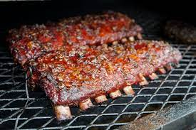

Ribs Recipe

Summary
These are the best ribs! Baking low and slow is our secret to fall off the bone oven-baked ribs. Some people think that ribs should be left to the “pit masters” — it’s just not true. Baking ribs in the oven is seriously easy. All you need is time — 95% of the recipe time is sitting back and relaxing while the ribs bake.
Ingredients
- 1/4 cup brown sugar
- 2 tablespoons chili powder
- Kosher salt and freshly ground black pepper
- 1 teaspoon dried oregano
- 1/2 teaspoon cayenne pepper
- 1/2 teaspoon garlic powder
- 1/2 teaspoon onion powder
- 2 racks baby back ribs
- 1 cup low-sodium chicken broth
- 2 tablespoons apple cider vinegar
- 1 cup barbecue sauce
Steps
- Remove the membrane (remember, this ensures fall off the bone ribs).
- Generously season both sides with salt and pepper. This is also a great opportunity for adding more flavor with your favorite spice rub.
- Cover the ribs with aluminum foil.
- Bake the ribs at a low temperature (275°F) for 2 ½ to 4 hours or until they are tender.
- Slather the baked ribs with barbecue sauce, and then broil (or grill) the ribs for a few minutes until the sauce is caramelized.